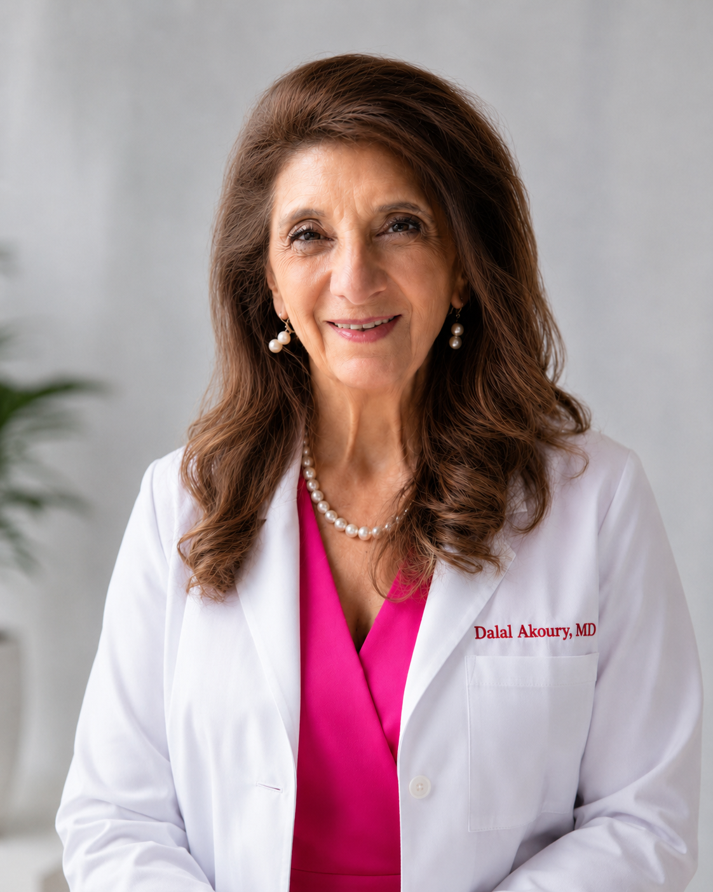

A Life of Proof
Influence you can see
40+
Years in medicine
10×
Bestselling author
15+
Peer-reviewed papers
6
Languages spoken
20+
Global conferences


I left Egypt to learn from the world. I return because the world has taught me enough.
Why, after forty years, I am coming home →Among the fastest-growing affluent populations on earth — and rising chronic disease.
World-class whole-system care is scarce. Today, patients fly abroad to find it.
What defines healthcare here for fifty years is being decided now.

Emory and St. Jude–trained pediatric oncologist. NIH-funded researcher. Four decades building one of the West's most complete integrative systems. Ten-time bestselling author. She returns not to open a clinic — but to build systems that outlast her.
A published author and international speaker, she has presented at the New York Academy of Medicine, Oxford University, Cambridge's Churchill College, the Royal Society of Medicine, and the London Stock Exchange. Dr. Akoury personally oversees all clinical protocols, ensuring every service is evidence-informed, medically sound, and fully transparent.
Dr. Akoury practices whole-person medicine, addressing body, mind, and spirit together. She integrates conventional understanding with functional, nutritional, hormonal, and preventive approaches, and is known for her warmth, her genuine listening, and care plans that are truly tailored to each individual.
See the ecosystem she built →"I don't want to build another clinic. I want to build something that will still heal people long after I am gone."
Every path leads back to one founder — and outward to Egypt. AWAREmed remains the clinical home; each entity is an independent instrument of the same vision.
A small number of private conversations with strategic leaders — each designed to open a relationship, not close a transaction.
Request a Private Meeting